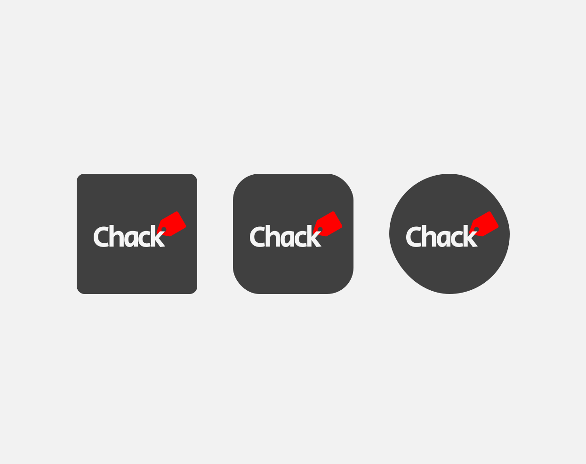
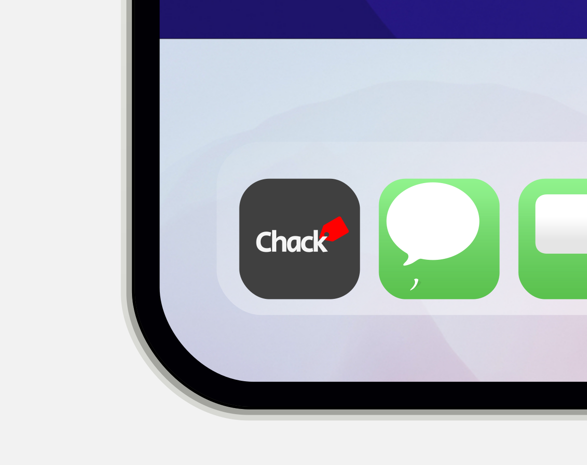

Chack WEB, APP
담당역할: UX/UI 및 영상 디자인, 리액트
Chack 어플리케이션과 웹사이트 UX/UI 디자인, 영상을 담당했습니다.
서비스에 필요한 모든 화면 디자인에 100% 참여하였습니다.
사용자 경험을 최적화하고 핵심 기능을 구현하는것에 주력 하였습니다.
Chack 서비스는단일사진을 이용한
AI 활용 실시간 신체 측정 3D 아바타 시뮬레이션 입니다.
Figma Slides 보러가기

